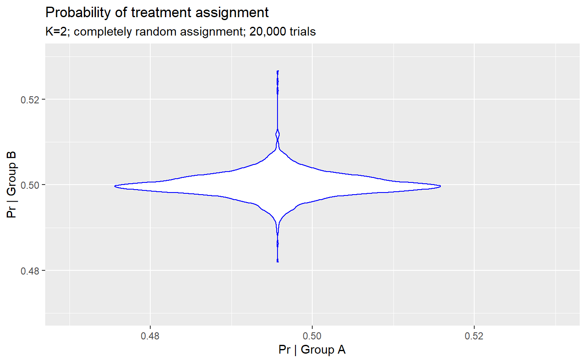
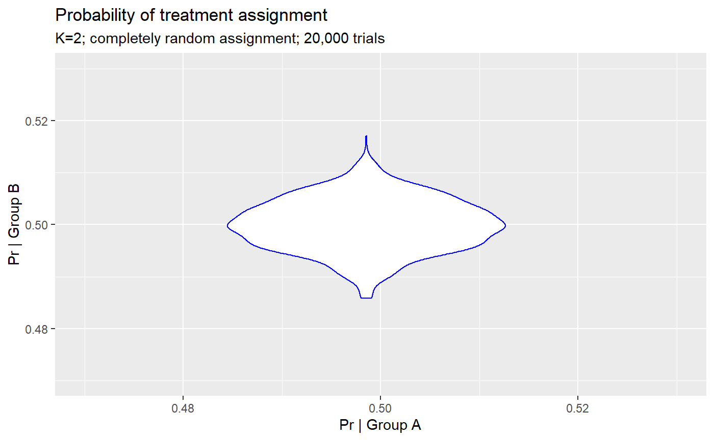

vignettes/03-assignment.Rmd
03-assignment.RmdWelcome to jumble! This program was written as a companion to academic work performed by researchers at Brown University to conduct re-randomization for cluster-randomized nursing home trials.
In this vignette we demonstrate some functions used for random assignment, following best practices outlined by other R packages like randomizeR, randomizr etc.
The random sampling method underlying jumble functions is the base R function sample(), rbinom(). While computational speed may be problematic in some cases, the base sample function is reliable, stable, and well-documented and tested.
The sample() functions calls the default Random number generator for R, the Mershene-Twister method, which can be queried using RNGKind().Matsumoto and Nishimura (1998)
Current system build:
## R version 3.6.0 (2019-04-26)## Windows platform : x86_64-w64-mingw32/x64 (64-bit)Assigning treatment is easy if you want equal probability of assignment to one or more groups, without concern to final sample size in each arm, covariate balance etc.
assign <- rnd_assign(df$pidnum, 2, as.integer(as.Date('2019-06-26')))
head(assign)## # A tibble: 6 x 2
## id group
## <int> <chr>
## 1 10124 a
## 2 10140 b
## 3 10165 b
## 4 10190 a
## 5 10229 a
## 6 10361 aTruly random assignment!
The seed is stored as a attribute
seed_iter <- attr(assign, 'seed')## [1] "Randomization performed: 2019-07-04 Seed: 18073"Don’t lose that information! As long as you know the seed you can reproduce the randomization:
assign <- rnd_assign(df$pidnum, 2, seed_iter)
head(assign)## # A tibble: 6 x 2
## id group
## <int> <chr>
## 1 10124 a
## 2 10140 b
## 3 10165 b
## 4 10190 a
## 5 10229 a
## 6 10361 aPerform 20,000 randomizations
pidnum <- df$pidnum
n=20000L
df_assign <- lapply(1:n, function(x) rnd_assign(pidnum, 2, 18073L+x))
assigns <- bind_cols(df_assign[[1]][, 1],
lapply(df_assign, function(x) x[, 2]))
df_assign_2 <- gather(assigns, key = 'trial', value = 'group',
starts_with('group')) %>%
group_by(id) %>%
summarize(`No. of trials` = n,
`No. group 'a'` = sum(group == 'a'),
`No. group 'b'` = sum(group == 'b'),
`Prob. group = 'a'` = `No. group 'a'` / n(),
`Prob. group = 'b'` = `No. group 'b'` / n())
head(df_assign_2)## # A tibble: 6 x 6
## id `No. of trials` `No. group 'a'` `No. group 'b'` `Prob. group = ~
## <int> <int> <int> <int> <dbl>
## 1 10124 20000 9986 10014 0.499
## 2 10140 20000 10000 10000 0.5
## 3 10165 20000 9997 10003 0.500
## 4 10190 20000 10003 9997 0.500
## 5 10229 20000 9997 10003 0.500
## 6 10361 20000 10001 9999 0.500
## # ... with 1 more variable: `Prob. group = 'b'` <dbl>First glance shows ~ equal likelihood of group assignment in 20,000 trials. ### Assignment tests

For any given individual, across 20,000 trials no assignment exceeds an imbalance of ~2-3%.
## Probability of assignment to group 'a' in 20,000 trials## Min. 1st Qu. Median Mean 3rd Qu. Max.
## 0.4733 0.4984 0.5001 0.5000 0.5015 0.5181## Probability of assignment to group 'b' in 20,000 trials## Min. 1st Qu. Median Mean 3rd Qu. Max.
## 0.4819 0.4985 0.4999 0.5000 0.5016 0.5266However, in each trial the number of individuals in group A vs. B was random and could be imbalanced.
df_trials <- gather(assigns, key = 'trial', value = 'group',
starts_with('group')) %>%
group_by(trial) %>%
summarize(`No. group 'a'` = sum(group == 'a'),
`No. group 'b'` = sum(group == 'b'))## No. assigned to group 'a' in 20,000 trials## Min. 1st Qu. Median Mean 3rd Qu. Max.
## 459.0 516.0 527.0 526.9 538.0 588.0## No assigned to group 'b' in 20,000 trials## Min. 1st Qu. Median Mean 3rd Qu. Max.
## 466.0 516.0 527.0 527.1 538.0 595.0See how the number assigned varies widely?
what if you want to guarantee an equal number of individuals are in each group?
We will repeat the exercise, dropping one person to make an odd-numbered cohort.
pidnum <- df$pidnum
pidnum <- pidnum[2:length(pidnum)] # drop 1
n=10000
seeds <- sample(-100000:100000, n)
df_assign <- lapply(1:n, function(x) {
set.seed(seeds[x])
rnd_allot(pidnum)
})
assigns <- bind_cols(df_assign[[1]][, 1],
lapply(df_assign, function(x) x[, 2]))
df_assign_2 <- gather(assigns, key = 'trial', value = 'group',
starts_with('group')) %>%
group_by(id) %>%
summarize(`No. of trials` = n,
`No. group 'a'` = sum(group == 'a'),
`No. group 'b'` = sum(group == 'b'),
`Prob. group = 'a'` = `No. group 'a'` / n(),
`Prob. group = 'b'` = `No. group 'b'` / n())
head(df_assign_2)## # A tibble: 6 x 6
## id `No. of trials` `No. group 'a'` `No. group 'b'` `Prob. group = ~
## <int> <dbl> <int> <int> <dbl>
## 1 10140 10000 4958 5042 0.496
## 2 10165 10000 4955 5045 0.496
## 3 10190 10000 5026 4974 0.503
## 4 10229 10000 4959 5041 0.496
## 5 10361 10000 4971 5029 0.497
## 6 10368 10000 4943 5057 0.494
## # ... with 1 more variable: `Prob. group = 'b'` <dbl>
Random assignment looks well-balanced between groups.
## Probability of assignment to group 'a' in 20,000 trials## Min. 1st Qu. Median Mean 3rd Qu. Max.
## 0.4829 0.4965 0.5001 0.5000 0.5035 0.5142## Probability of assignment to group 'b' in 20,000 trials## Min. 1st Qu. Median Mean 3rd Qu. Max.
## 0.4858 0.4965 0.4999 0.5000 0.5035 0.5171df_trials <- gather(assigns, key = 'trial', value = 'group',
starts_with('group')) %>%
group_by(trial) %>%
summarize(`No. group 'a'` = sum(group == 'a'),
`No. group 'b'` = sum(group == 'b'))What about the size of the groups?
## No. assigned to group 'a' in 20,000 trials## Min. 1st Qu. Median Mean 3rd Qu. Max.
## 526.0 526.0 526.0 526.5 527.0 527.0## No assigned to group 'b' in 20,000 trials## Min. 1st Qu. Median Mean 3rd Qu. Max.
## 526.0 526.0 527.0 526.5 527.0 527.0Equal size! The number now randomly goes between 526 or 527 for either the ‘a’ or ‘b’ group. The imbalance is selected with equal probability.
Hammer SM, et al. 1996. “A Trial Comparing Nucleoside Monotherapy with Combination Therapy in Hiv-Infected Adults with Cd4 Cell Counts from 200 to 500 Per Cubic Millimeter.” N Eng J M 335: 1081–90.
Matsumoto, M, and T Nishimura. 1998. “Mersenne Twister: A 623-Dimensionally Equidistributed Uniform Pseudo-Random Number Generator.” ACM Transactions on Modeling and Computer Simulation 8: 3–30. Source code formerly at http://www.math.keio.ac.jp/~matumoto/emt.html. Now see http://www.math.sci.hiroshima-u.ac.jp/~m-mat/MT/VERSIONS/C-LANG/c-lang.html.